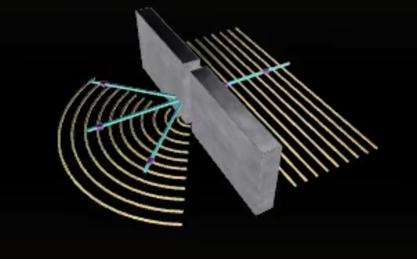
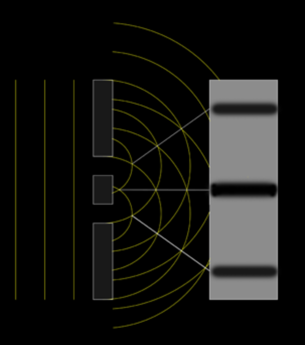
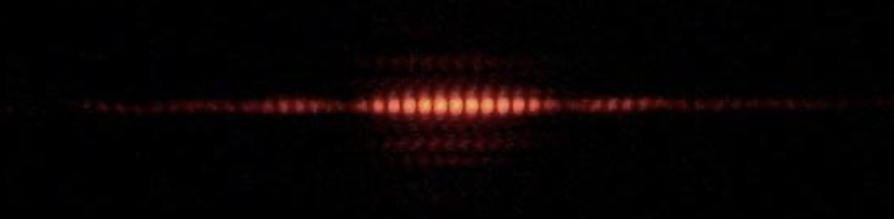

Diffraction is the spreading out of waves as they pass through an aperture or around objects. It occurs when the size of the aperture or obstacle is of the same order of magnitude as the wavelength of the incident wave. For very small aperture sizes, the vast majority of the wave is blocked. For large apertures the wave passes by or through the obstacle without any significant diffraction.
In an aperture with width smaller than the wavelength, the wave transmitted through the aperture spreads all the way round and behaves like a point source of waves (they spread out below).
The double slit experiment shows that light behaves like a wave. When light passes through two closely spaced slits, it produces an interference pattern of bright and dark fringes on a screen, caused by the constructive and destructive interference of the overlapping waves from the two slits.
Here is a picture of a real interference pattern:
Written by Albert Marin